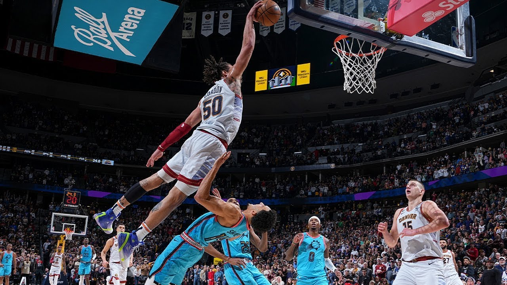

Aaron Gordon is one of the starters on the Denver Nuggets. He is extremely good at dunking and rebounding. Gordon once jumped from the thrid peg on the key and dunked.
Image by: Bandwagon Channel from Youtube
Gordon is all-star level. Without him, the Denver Nuggets would not be the amazing team that they are. The Nuggets acquired Aaron Gordon in a trade with the Orlando Magic, another NBA team. Aaron is not only a good player, but his style is just cool. He recently signed with a shoe company, and now has his own shoes. The new AG 361's are nice shoes, and just add to his style.
Most Denver Nuggets fans know that Gordon is a key part of the team's scheme to create a dynasty.